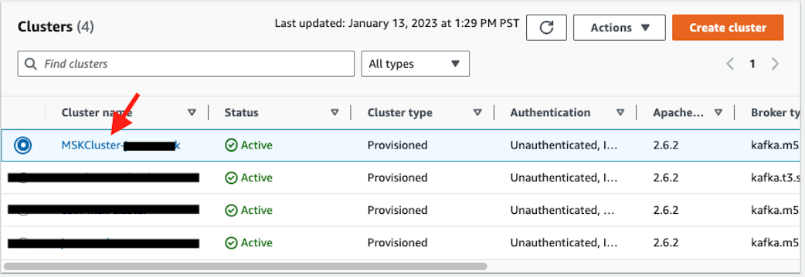
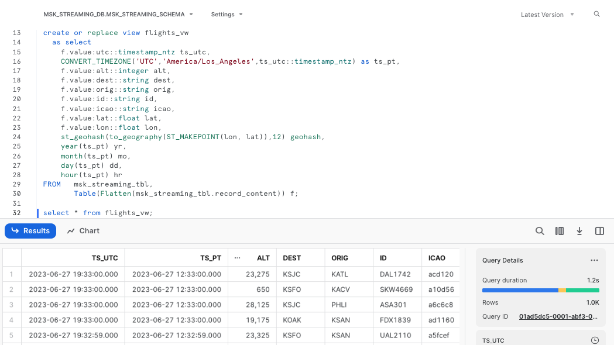
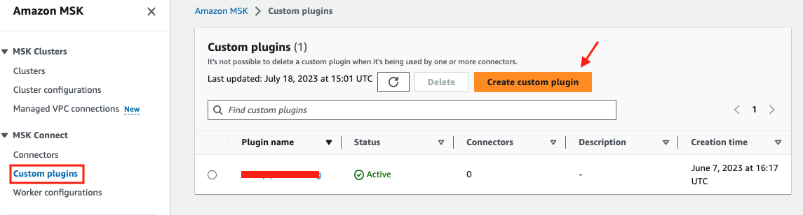

Snowflake's Snowpipe streaming capabilities are designed for rowsets with variable arrival frequency. It focuses on lower latency and cost for smaller data sets. This helps data workers stream rows into Snowflake without requiring files with a more attractive cost/latency profile.
Here are some of the use cases that can benefit from Snowpipe streaming:
- IoT time-series data ingestion
- CDC streams from OLTP systems
- Log ingestion from SIEM systems
- Ingestion into ML feature stores
In our demo, we will use real-time commercial flight data over the San Francisco Bay Area from the Opensky Network to illustrate the solution using Snowflake's Snowpipe streaming and MSK (Amazon Managed Streaming for Apache Kafka).
Note that you can either stream the data into a regular Snowflake table or a Snowflake managed Apache Iceberg table depending on your use case.
The architecture diagram below shows the deployment. An MSK cluster and a Linux EC2 instance (jumphost) will be provisioned in private subnets of an AWS VPC. The Linux jumphost will host the Kafka producer and Snowpipe streaming via Kafka Connect.
The Kafka producer calls the data sources' REST API and receives time-series data in JSON format. This data is then ingested into the Kafka cluster before being picked up by the Kafka connector and delivered to a Snowflake table. The data in Snowflake table can be visualized in real-time with AMG (Amazon Managed Grafana) and Streamlit The historical data can also be analyzed by BI tools like Amazon Quicksight.


Prerequisites
- Familiarity with Snowflake, basic SQL knowledge, Snowsight UI and Snowflake objects
- Familiarity with AWS Services (e.g. EC2, MSK, etc), Networking and the Management Console
- Basic knowledge of Python and Linux shell scripting
What You'll Need Before the Lab
To participate in the virtual hands-on lab, attendees need the following resources.
- A Snowflake Enterprise Account on preferred AWS region with
ACCOUNTADMINaccess - An AWS Account with
Administrator Access - Create your own VPC and subnets (This is optional if you have an existing VPC with subnets you can leverage. Please refer to this AWS document for the MSK networking topology)
- In the AWS account, create a VPC, preferrably in the same region as the Snowflake account
- In the VPC, create subnets and attach an internet gateway to allow egress traffic to the internet by using a routing table and security group for outbound traffic. Note that the subnets can be public or private, for private subnets, you will need to attach a NAT gateway to allow egress traffic to the internet. Public subnets are sufficient for this lab.
- Now if you have decided to create your own VPC/subnets, for your convenience, click here to deploy a VPC with a pair of public and private subnets, internet gateway and NAT gateway for you. Note that you must have network administrator permissions to deploy these resources.
What You'll Learn
- Using MSK (Amazon Managed Streaming for Apache Kafka)
- Connecting to EC2 instances with Amazon System Session Manager, this is an alternative to SSH if your instance is in a private subnet
- Using SnowSQL, the command line client for connecting to Snowflake to execute SQL queries and perform all DDL and DML operations, including loading data into and unloading data out of database tables.
- Using Snowflake to query tables populated with time-series data
What You'll Build
- Create a provisioned Kafka cluster
- Create Kafka producers and connectors
- Create topics in a Kafka cluster
- A Snowflake database for hosting real-time flight data
1. Create an MSK cluster and an EC2 instance
The MSK cluster is created in a VPC managed by Amazon. We will deploy our Kafka clients in our own VPC and use security groups to ensure the communications between the MSK cluster and clients are secure.
First, click here to launch a provisioned MSK cluster. Note the default AWS region is us-west-2 (Oregon), feel free to select a region you prefer to deploy the environment.
Click Next at the Create stack page. Set the Stack name or modify the default value to customize it to your identity. Leave the default Kafka version as is. For Subnet1 and Subnet2, in the drop-down menu, pick two different subnets respectively, they can be either public or private subnets depending on the network layout of your VPC. Please note that if you plan to use Amazon MSK Connect later, you should choose private subnets here. For MSKSecurityGroupId, we recommend using the default security group in your VPC, if you do not have the default security group, create one on your own before moving forward. Leave TLSMutualAuthentication as false and the jumphost instance type and AMI id as default before clicking Next.
See below sample screen capture for reference.

Leave everything as default in the Configure stack options page and click Next. In the Review page, click Submit.
In about 10-30 minutes depending on your AWS region, the Cloudformation template provisions an MSK cluster with two brokers. It will also provision a Linux EC2 instance in the subnet you selected. We will then use it to run the Kafka connector with Snowpipe streaming SDK and the producer.
2. Configure the Linux session for timeout and default shell
In this step we need to connect to the EC2 instance in order to interact with the MSK cluster.
Go to the AWS Systems Manager console in the same region where you setup the MSK cluster, Click Session Manager on the left pane.

Next, we will set the preferred shell as bash.
Click the Preferences tab. 
Click the Edit button. 
Go to General preferences section, type in 60 minutes for idle session timeout value.

Further scroll down to Linux shell profile section, and type in /bin/bash before clicking Save button.

3. Connect to the Linux EC2 instance console
Now go back to the Session tab and click the Start session button. 
Now you should see the EC2 instance created by the Cloudformation template under Target instances. Its name should be Start session.

4. Create a key-pair to be used for authenticating with Snowflake
Create a key pair in AWS Session Manager console by executing the following commands. You will be prompted to give an encryption password, remember this phrase, you will need it later.
cd $HOME
openssl genrsa 2048 | openssl pkcs8 -topk8 -inform PEM -out rsa_key.p8
See below example screenshot:

Next we will create a public key by running following commands. You will be prompted to type in the phrase you used in above step.
openssl rsa -in rsa_key.p8 -pubout -out rsa_key.pub
see below example screenshot:

Next we will print out the public key string in a correct format that we can use for Snowflake.
grep -v KEY rsa_key.pub | tr -d '\n' | awk '{print $1}' > pub.Key
cat pub.Key
see below example screenshot:

5. Install the Kafka connector for Snowpipe streaming
Run the following command to install the Kafka connector and Snowpipe streaming SDK
passwd=changeit # Use the default password for the Java keystore, you should change it after finishing the lab
directory=/home/ssm-user/snowpipe-streaming # Installation directory
cd $HOME
mkdir -p $directory
cd $directory
pwd=`pwd`
sudo yum clean all
sudo yum -y install openssl vim-common java-1.8.0-openjdk-devel.x86_64 gzip tar jq python3-pip
wget https://archive.apache.org/dist/kafka/2.8.1/kafka_2.12-2.8.1.tgz
tar xvfz kafka_2.12-2.8.1.tgz -C $pwd
wget https://github.com/aws/aws-msk-iam-auth/releases/download/v1.1.1/aws-msk-iam-auth-1.1.1-all.jar -O $pwd/kafka_2.12-2.8.1/libs/aws-msk-iam-auth-1.1.1-all.jar
rm -rf $pwd/kafka_2.12-2.8.1.tgz
cd /tmp && cp /usr/lib/jvm/java-openjdk/jre/lib/security/cacerts kafka.client.truststore.jks
cd /tmp && keytool -genkey -keystore kafka.client.keystore.jks -validity 300 -storepass $passwd -keypass $passwd -dname "CN=snowflake.com" -alias snowflake -storetype pkcs12
#Snowflake kafka connector, must be v3.0.0 or later for Iceberg support, here we use v3.1.0
wget https://repo1.maven.org/maven2/com/snowflake/snowflake-kafka-connector/3.1.0/snowflake-kafka-connector-3.1.0.jar -O $pwd/kafka_2.12-2.8.1/libs/snowflake-kafka-connector-3.1.0.jar
wget https://repo1.maven.org/maven2/org/bouncycastle/bc-fips/1.0.1/bc-fips-1.0.1.jar -O $pwd/kafka_2.12-2.8.1/libs/bc-fips-1.0.1.jar
wget https://repo1.maven.org/maven2/org/bouncycastle/bcpkix-fips/1.0.3/bcpkix-fips-1.0.3.jar -O $pwd/kafka_2.12-2.8.1/libs/bcpkix-fips-1.0.3.jar
Note that the version numbers for Kafka, the Snowflake Kafka connector, and the Snowpipe Streaming SDK are dynamic, as new versions are continually published. We are using the version numbers that have been validated to work.
6. Retrieve the broker string from the MSK cluster.
Go to the MSK console and click the newly created MSK cluster, it should have a substring MSKCluster in its name.

Click View client information
We are going to use TLS authentication between the client and brokers. Copy down the broker string under Private endpoint for TLS authentication type. 
Now switch back to the Session Manager window and execute the following command by replacing
export BS=<broker string>
Now run the following command to add BS as an environment variable so it is recognized across the Linux sessions.
echo "export BS=$BS" >> ~/.bashrc
See the following example screen capture.

7. Create a configuration file connect-standalone.properties for the Kafka connector
Run the following commands to generate a configuration file connect-standalone.properties in directory /home/ssm-user/snowpipe-streaming/scripts for the client to authenticate with the Kafka cluster.
dir=/home/ssm-user/snowpipe-streaming/scripts
mkdir -p $dir && cd $dir
cat << EOF > $dir/connect-standalone.properties
#************CREATING SNOWFLAKE Connector****************
bootstrap.servers=$BS
#************SNOWFLAKE VALUE CONVERSION****************
key.converter=org.apache.kafka.connect.storage.StringConverter
value.converter=com.snowflake.kafka.connector.records.SnowflakeJsonConverter
key.converter.schemas.enable=true
value.converter.schemas.enable=true
#************SNOWFLAKE ****************
offset.storage.file.filename=/tmp/connect.offsets
# Flush much faster than normal, which is useful for testing/debugging
offset.flush.interval.ms=10000
#*********** FOR SSL ****************
security.protocol=SSL
ssl.truststore.location=/tmp/kafka.client.truststore.jks
ssl.truststore.password=changeit
ssl.enabled.protocols=TLSv1.1,TLSv1.2
consumer.security.protocol=SSL
consumer.ssl.truststore.location=/tmp/kafka.client.truststore.jks
consumer.ssl.truststore.password=changeit
consumer.ssl.enabled.protocols=TLSv1.1,TLSv1.2
EOF
A configuration file connect-standalone.properties is created in directory /home/ssm-user/snowpipe-streaming/scripts
8. Create a security client.properties configuration file for the producer
Run the following commands to create a security configuration file client.properties for the MSK cluster
dir=/home/ssm-user/snowpipe-streaming/scripts
cat << EOF > $dir/client.properties
security.protocol=SSL
ssl.truststore.location=/tmp/kafka.client.truststore.jks
ssl.truststore.password=changeit
ssl.enabled.protocols=TLSv1.1,TLSv1.2
EOF
A configuration file client.properties is created in directory /home/ssm-user/snowpipe-streaming/scripts
9. Create a streaming topic called "streaming" in the MSK cluster
Now we can run the following commands to create a Kafka topic on the MSK cluster to stream our data.
$HOME/snowpipe-streaming/kafka_2.12-2.8.1/bin/kafka-topics.sh --bootstrap-server $BS --command-config $HOME/snowpipe-streaming/scripts/client.properties --create --topic streaming --partitions 2 --replication-factor 2
You should see the response Created topic streaming if it is successful.
To describe the topic, run the following commands:
$HOME/snowpipe-streaming/kafka_2.12-2.8.1/bin/kafka-topics.sh --bootstrap-server $BS --command-config $HOME/snowpipe-streaming/scripts/client.properties --describe --topic streaming
You should see there are two partitions with a replication factor of 2 in the streaming topic. See below example screenshot: 
1. Creating user, role, and database
First login to your Snowflake account as a power user with ACCOUNTADMIN role. Then run the following SQL commands in a worksheet to create a user, database and the role that we will use in the lab.
-- Set default value for multiple variables
-- For purpose of this workshop, it is recommended to use these defaults during the exercise to avoid errors
-- You should change them after the workshop
SET PWD = 'Test1234567';
SET USER = 'STREAMING_USER';
SET DB = 'MSK_STREAMING_DB';
SET WH = 'MSK_STREAMING_WH';
SET ROLE = 'MSK_STREAMING_RL';
USE ROLE ACCOUNTADMIN;
-- CREATE USERS
CREATE USER IF NOT EXISTS IDENTIFIER($USER) PASSWORD=$PWD COMMENT='STREAMING USER';
-- CREATE ROLES
CREATE OR REPLACE ROLE IDENTIFIER($ROLE);
-- CREATE DATABASE AND WAREHOUSE
CREATE DATABASE IF NOT EXISTS IDENTIFIER($DB);
USE IDENTIFIER($DB);
CREATE OR REPLACE WAREHOUSE IDENTIFIER($WH) WITH WAREHOUSE_SIZE = 'SMALL';
-- GRANTS
GRANT CREATE WAREHOUSE ON ACCOUNT TO ROLE IDENTIFIER($ROLE);
GRANT ROLE IDENTIFIER($ROLE) TO USER IDENTIFIER($USER);
GRANT OWNERSHIP ON DATABASE IDENTIFIER($DB) TO ROLE IDENTIFIER($ROLE);
GRANT USAGE ON WAREHOUSE IDENTIFIER($WH) TO ROLE IDENTIFIER($ROLE);
-- SET DEFAULTS
ALTER USER IDENTIFIER($USER) SET DEFAULT_ROLE=$ROLE;
ALTER USER IDENTIFIER($USER) SET DEFAULT_WAREHOUSE=$WH;
-- RUN FOLLOWING COMMANDS TO FIND YOUR ACCOUNT IDENTIFIER, COPY IT DOWN FOR USE LATER
-- IT WILL BE SOMETHING LIKE <organization_name>-<account_name>
-- e.g. ykmxgak-wyb52636
WITH HOSTLIST AS
(SELECT * FROM TABLE(FLATTEN(INPUT => PARSE_JSON(SYSTEM$allowlist()))))
SELECT REPLACE(VALUE:host,'.snowflakecomputing.com','') AS ACCOUNT_IDENTIFIER
FROM HOSTLIST
WHERE VALUE:type = 'SNOWFLAKE_DEPLOYMENT_REGIONLESS';
Please write down the Account Identifier, we will need it later. 
Next we need to configure the public key for the streaming user to access Snowflake programmatically.
First, in the Snowflake worksheet, replace < pubKey > with the content of the file /home/ssm-user/pub.Key (see step 4 by clicking on section #2 Create a provisioned Kafka cluster and a Linux jumphost in AWS in the left pane) in the following SQL command and execute.
use role accountadmin;
alter user streaming_user set rsa_public_key='< pubKey >';
See below example screenshot:

Now logout of Snowflake, sign back in as the default user streaming_user we just created with the associated password (default: Test1234567). Run the following SQL commands in a worksheet to create a schema (e.g. MSK_STREAMING_SCHEMA) in the default database (e.g. MSK_STREAMING_DB):
SET DB = 'MSK_STREAMING_DB';
SET SCHEMA = 'MSK_STREAMING_SCHEMA';
USE IDENTIFIER($DB);
CREATE OR REPLACE SCHEMA IDENTIFIER($SCHEMA);
2. Install SnowSQL (optional but highly recommended)
This step is optional for this workshop but is highly recommended if you prefer to use the CLI to interact with Snowflake later instead of the web console.
SnowSQL is the command line client for connecting to Snowflake to execute SQL queries and perform all DDL and DML operations, including loading data into and unloading data out of database tables.
To install SnowSQL. Execute the following commands on the Linux Session Manager console:
curl https://sfc-repo.snowflakecomputing.com/snowsql/bootstrap/1.2/linux_x86_64/snowsql-1.2.24-linux_x86_64.bash -o /tmp/snowsql-1.2.24-linux_x86_64.bash
echo -e "~/bin \n y" > /tmp/ans
bash /tmp/snowsql-1.2.24-linux_x86_64.bash < /tmp/ans
See below example screenshot:

Next set the environment variable for Snowflake Private Key Phrase:
export SNOWSQL_PRIVATE_KEY_PASSPHRASE=<key phrase you set up when running openssl previously>
Note that you should add the command above in the ~/.bashrc file to preserve this environment variable across sessions.
echo "export SNOWSQL_PRIVATE_KEY_PASSPHRASE=$SNOWSQL_PRIVATE_KEY_PASSPHRASE" >> ~/.bashrc
Now you can execute this command to interact with Snowflake:
$HOME/bin/snowsql -a <Snowflake Account Identifier> -u streaming_user --private-key-path $HOME/rsa_key.p8 -d msk_streaming_db -s msk_streaming_schema
See below example screenshot:

Type Ctrl-D to get out of SnowSQL session.
You can edit the ~/.snowsql/config file to set default parameters and eliminate the need to specify them every time you run snowsql.
At this point, the Snowflake setup is complete.
1. Run the following commands to collect various connection parameters for the Kafka connector
cd $HOME
outf=/tmp/params
cat << EOF > /tmp/get_params
a=''
until [ ! -z \$a ]
do
read -p "Input Snowflake account identifier: e.g. ylmxgak-wyb53646 ==> " a
done
echo export clstr_url=\$a.snowflakecomputing.com > $outf
export clstr_url=\$a.snowflakecomputing.com
read -p "Snowflake cluster user name: default: streaming_user ==> " user
if [[ \$user == "" ]]
then
user="streaming_user"
fi
echo export user=\$user >> $outf
export user=\$user
pass=''
until [ ! -z \$pass ]
do
read -p "Private key passphrase ==> " pass
done
echo export key_pass=\$pass >> $outf
export key_pass=\$pass
read -p "Full path to your Snowflake private key file, default: /home/ssm-user/rsa_key.p8 ==> " p8
if [[ \$p8 == "" ]]
then
p8="/home/ssm-user/rsa_key.p8"
fi
priv_key=\`cat \$p8 | grep -v PRIVATE | tr -d '\n'\`
echo export priv_key=\$priv_key >> $outf
export priv_key=\$priv_key
cat $outf >> $HOME/.bashrc
EOF
. /tmp/get_params
See below example screen capture.

2. Run the following commands to create a Snowflake Kafka connect property configuration file:
dir=/home/ssm-user/snowpipe-streaming/scripts
cat << EOF > $dir/snowflakeconnectorMSK.properties
name=snowpipeStreaming
connector.class=com.snowflake.kafka.connector.SnowflakeSinkConnector
tasks.max=4
topics=streaming
snowflake.private.key.passphrase=$key_pass
snowflake.database.name=MSK_STREAMING_DB
snowflake.schema.name=MSK_STREAMING_SCHEMA
snowflake.topic2table.map=streaming:MSK_STREAMING_TBL
buffer.count.records=10000
buffer.flush.time=5
buffer.size.bytes=20000000
snowflake.url.name=$clstr_url
snowflake.user.name=$user
snowflake.private.key=$priv_key
snowflake.role.name=MSK_STREAMING_RL
snowflake.ingestion.method=snowpipe_streaming
value.converter.schemas.enable=false
jmx=true
key.converter=org.apache.kafka.connect.storage.StringConverter
value.converter=org.apache.kafka.connect.json.JsonConverter
errors.tolerance=all
EOF
Finally, we are ready to start ingesting data into the Snowflake table.
1. Start the Kafka Connector for Snowpipe streaming
Go back to the Linux console and execute the following commands to start the Kafka connector.
$HOME/snowpipe-streaming/kafka_2.12-2.8.1/bin/connect-standalone.sh $HOME/snowpipe-streaming/scripts/connect-standalone.properties $HOME/snowpipe-streaming/scripts/snowflakeconnectorMSK.properties
If everything goes well, you should see something similar to screen capture below: 
2. Start the producer that will ingest real-time data to the MSK cluster
Start a new Linux session in step 3 by clicking on section #2 Create a provisioned Kafka cluster and a Linux jumphost in AWS in the left pane.
curl --connect-timeout 5 http://ecs-alb-1504531980.us-west-2.elb.amazonaws.com:8502/opensky | $HOME/snowpipe-streaming/kafka_2.12-2.8.1/bin/kafka-console-producer.sh --broker-list $BS --producer.config $HOME/snowpipe-streaming/scripts/client.properties --topic streaming
You should see response similar to screen capture below if everything works well.

Note that in the script above, the producer queries a Rest API that provides real-time flight data over the San Francisco Bay Area in JSON format. The data includes information such as timestamps, icao numbers, flight IDs, destination airport, longitude, latitude, and altitude of the aircraft, etc. The data is ingested into the streaming topic on the MSK cluster and then picked up by the Snowpipe streaming Kafka connector, which delivers it directly into a Snowflake table msk_streaming_db.msk_streaming_schema.msk_streaming_tbl.

Now, switch back to the Snowflake console and make sure that you signed in as the default user streaming_user. The data should have been streamed into a table, ready for further processing.
1. Query the raw data
To verify that data has been streamed into Snowflake, execute the following SQL commands.
use msk_streaming_db;
use schema msk_streaming_schema;
show channels in table msk_streaming_tbl;
You should see that there are two channels, corresponding to the two partitions created earlier in the topic. 
Note that, unlike the screen capture above, at this point, you should only see one row in the table, as we have only ingested data once. We will see new rows being added later as we continue to ingest more data.
Now run the following query on the table.
select * from msk_streaming_tbl;
You should see there are two columns in the table: RECORD_METADATA and RECORD_CONTENT as shown in the screen capture below.
 The
The RECORD_CONTENT column is an JSON array that needs to be flattened.
2. Flatten the raw JSON data
Now execute the following SQL commands to flatten the raw JSONs and create a materialized view with multiple columns based on the key names.
create or replace view flights_vw
as select
f.value:utc::timestamp_ntz ts_utc,
CONVERT_TIMEZONE('UTC','America/Los_Angeles',ts_utc::timestamp_ntz) as ts_pt,
f.value:alt::integer alt,
f.value:dest::string dest,
f.value:orig::string orig,
f.value:id::string id,
f.value:icao::string icao,
f.value:lat::float lat,
f.value:lon::float lon,
st_geohash(to_geography(ST_MAKEPOINT(lon, lat)),12) geohash,
year(ts_pt) yr,
month(ts_pt) mo,
day(ts_pt) dd,
hour(ts_pt) hr
FROM msk_streaming_tbl,
Table(Flatten(msk_streaming_tbl.record_content)) f;
The SQL commands create a view, convert timestamps to different time zones, and use Snowflake's Geohash function to generate geohashes that can be used in time-series visualization tools like Grafana
Let's query the view flights_vw now.
select * from flights_vw;
As a result, you will see a nicely structured output with columns derived from the JSONs 
3. Stream real-time flight data continuously to Snowflake
We can now write a loop to stream the flight data continuously into Snowflake.
Go back to the Linux session and run the following script.
while true
do
curl --connect-timeout 5 -k http://ecs-alb-1504531980.us-west-2.elb.amazonaws.com:8502/opensky | $HOME/snowpipe-streaming/kafka_2.12-2.8.1/bin/kafka-console-producer.sh --broker-list $BS --producer.config $HOME/snowpipe-streaming/scripts/client.properties --topic streaming
sleep 10
done
You can now go back to the Snowflake worksheet to run a select count(1) from flights_vw query every 10 seconds to verify that the row counts is indeed increasing.
Iceberg table ingestion requires version 3.0.0 or later of the Kafka connector and is only supported with Snowpipe Streaming. To configure the Kafka connector for Iceberg table ingestion, follow the regular setup steps for a Snowpipe Streaming-based connector mentioned in the Section 4 in the left pane of this quickstart with a few differences noted in the following sections.
1. Create an External Volume in Snowflake
Before you create an Iceberg table, you must have an external volume. An external volume is a Snowflake object that stores information about your cloud storage locations and identity and access management (IAM) entities (for example, IAM roles). Snowflake uses an external volume to establish a connection with your cloud storage in order to access Iceberg metadata and Parquet data.
To create an external volume in S3, follow the steps mentioned in this document.
Below is an example to create External Volume below: When creating the external volume, be sure to use the ACCOUNTADMIN role.
use role accountadmin;
use schema msk_streaming_schema;
CREATE OR REPLACE EXTERNAL VOLUME iceberg_lab_vol
STORAGE_LOCATIONS =
(
(
NAME = 'my-s3-us-west-2'
STORAGE_PROVIDER = 'S3'
STORAGE_BASE_URL = 's3://<my s3 bucket name>/'
STORAGE_AWS_ROLE_ARN = '<arn:aws:iam::123456789012:role//myrole>'
STORAGE_AWS_EXTERNAL_ID = 'iceberg_table_external_id'
)
);
After the external volume is created, use the ACCOUNTADMIN role to grant usage to the role.
GRANT ALL ON EXTERNAL VOLUME iceberg_lab_vol TO ROLE IDENTIFIER($ROLE) WITH GRANT OPTION;
2.Pre-create a Snowflake-managed Iceberg Table for Streaming
Note that if you are using a regular table to store the streaming data, Snowpipe streaming will automatically create it for you if it doesn't exist already. But for Iceberg table, you will need to pre-create an Iceberg table referencing the external volume you just created. You can specify BASE_LOCATION to instruct Snowflake where to write table data and metadata, or leave empty to write data and metadata to the location specified in the external volume definition.
Sharing an example of the SQL to create External volumne below:
CREATE OR REPLACE ICEBERG TABLE MSK_STREAMING_ICEBERG_TBL (
record_metadata OBJECT()
)
EXTERNAL_VOLUME = 'iceberg_lab_vol'
CATALOG = 'SNOWFLAKE'
BASE_LOCATION = 'MSK_STREAMING_ICEBERG_TBL';
Since the BASE_LOCATION is specified, it will create a folder based on the value in the STORAGE_BASE_URL of the External Volume.

Since the Scehmatization is enabled in the Kafka Connector, followig privileges are set properly on the table.
GRANT EVOLVE SCHEMA ON TABLE msk_streaming_db.msk_streaming_schema.MSK_STREAMING_ICEBERG_TBL TO ROLE MSK_STREAMING_RL;
ALTER ICEBERG TABLE msk_streaming_db.msk_streaming_schema.MSK_STREAMING_ICEBERG_TBL set enable_schema_evolution=true;
3. Modify the Snowpipe streaming properties file
Modify the two lines in $HOME/snowpipe-streaming/scripts/snowflakeconnectorMSK.properties
topics=streaming-iceberg
snowflake.topic2table.map=streaming-iceberg:MSK_STREAMING_ICEBERG_TBL
# Add the property which specifies connector to ingest data into an Iceberg table.
snowflake.streaming.iceberg.enabled = true
#Also verify schematiaztion is enabled
snowflake.enable.schematization=true
Save the properties file
Note, Iceberg table ingestion is not supported when snowflake.streaming.enable.single.buffer is set to false.
4. Create a new topic in MSK
We now need to create a new topic streaming-iceberg in MSK cluster by running the following command:
$HOME/snowpipe-streaming/kafka_2.12-2.8.1/bin/kafka-topics.sh --bootstrap-server $BS --command-config $HOME/snowpipe-streaming/scripts/client.properties --create --topic streaming-iceberg --partitions 2 --replication-factor 2
5. Restart the consumer
Restart the consumer by issuing the following shell command in a new Session Manager console.
kill -9 `ps -ef | grep java | grep -v grep | awk '{print $2}'`
$HOME/snowpipe-streaming/kafka_2.12-2.8.1/bin/connect-standalone.sh $HOME/snowpipe-streaming/scripts/connect-standalone.properties $HOME/snowpipe-streaming/scripts/snowflakeconnectorMSK.properties
6. Ingest data
Now ingest some data into the newly created topic by running the following command in a new Session Manager console.
curl --connect-timeout 5 http://ecs-alb-1504531980.us-west-2.elb.amazonaws.com:8502/opensky | \
jq -c '.[]' | \
while read i ; \
do \
echo $i | \
$HOME/snowpipe-streaming/kafka_2.12-2.8.1/bin/kafka-console-producer.sh --broker-list $BS --producer.config $HOME/snowpipe-streaming/scripts/client.properties --topic streaming-iceberg ; \
echo $i ; \
done
7. Query ingested data in Snowflake
Now, switch back to the Snowflake console and make sure that you signed in as the default user streaming_user. The data should have been streamed into a table, ready for further processing.
To verify that data has been streamed into Snowflake, execute the following SQL commands.
select * from MSK_STREAMING_DB.MSK_STREAMING_SCHEMA.MSK_STREAMING_ICEBERG_TBL;
You should see that the table contains the keys in json records as column names with values and RECORD_METADATA columns are populated.

So far we have been hosting the Kafka connector for Snowpipe Streaming on the EC2 instance. You can also use Amazon MSK Connect to manage the connector.
*Note that in order to use MSKC, it is suggested to run your MSK cluster in a private subnet with egress to the internet via the NAT gateway for it to work. See this AWS documentation for more information.
1. Create a S3 bucket to store the custom plugins
Follow this AWS documentation to create a S3 bucket.
2. Upload the libraries to the S3 bucket
On your EC2 session, run the following commands to compress the libraries into a zipped file.
cd $HOME/snowpipe-streaming/kafka_2.12-2.8.1/libs
zip -9 /tmp/snowpipeStreaming-mskc-plugins.zip *
aws s3 cp /tmp/snowpipeStreaming-mskc-plugins.zip s3://<your s3 bucket name>/snowpipeStreaming-mskc-plugins.zip
3. Create a custom plugin in MSK
Go to the MSK console, click Custom plugins on the left pane. Click Create Custom plugin. 
Fill in the s3 path to your uploaded zip file, e.g. s3://my-mskc-bucket/snowpipeStreaming-mskc-plugins.zip Give the custom plugin a name, e.g. my-mskc-plugin, click Create custom plugin.

4. Create a connector
Click Connectors on the left pane, then click Create connector. 
Check the Use existing custom plugin button. Select the custom plugin you just created, click Next. 
Give the connector a name, e.g. snowpipeStreaming in the Basic information section. 
Select the MSK cluster you want to associate this connector with. Scroll down to Configuration settings, copy and paste the content from the configuration file: $HOME/snowpipe-streaming/scripts/snowflakeconnectorMSK.properties in the EC2 instance. 
Leave all other settings as default, further scroll down to Access permissions. In the Choose service role drop-down menu, select the role created by the Cloudformation template in the beginning of this quickstarts. The role name should look something like this Next.

In the Security page, leave everything as default, click Next. Skip the Logs page as it is optional, click Next. Review the configurations and click Create connector. The connector will be created in about 5-10 minutes. 
At this point, the Kafka connector for Snowpipestreaming has been configured, it is running and managed by MSKC, all you need to do is to run the source connector to ingest live data continuously as shown in Step 3 of Section 6.
Previously we ingested raw jsons into the table MSK_STREAMING_TBL and did a DDL to create a nicely formulated view with the column names mapped to the keys in the jsons. You can now skip the DDL step with schema detection enabled to detect the schema of the streaming data and load data into tables that automatically match any user-defined schema.
1. Modify the Snowpipe streaming properties file
Modify the two lines in $HOME/snowpipe-streaming/scripts/snowflakeconnectorMSK.properties
from
topics=streaming
snowflake.topic2table.map=streaming:MSK_STREAMING_TBL
to
topics=streaming,streaming-schematization
snowflake.topic2table.map=streaming:MSK_STREAMING_TBL,streaming-schematization:MSK_STREAMING_SCHEMATIZATION_TBL
#Also enable schematiaztion by adding
snowflake.enable.schematization=true
Save the properties file
2. Create a new topic in MSK
We now need to create a new topic streaming-schematization in MSK cluster by running the following command:
$HOME/snowpipe-streaming/kafka_2.12-2.8.1/bin/kafka-topics.sh --bootstrap-server $BS --command-config $HOME/snowpipe-streaming/scripts/client.properties --create --topic streaming-schematization --partitions 2 --replication-factor 2
3. Restart the consumer
Restart the consumer by issuing the following shell command in a new Session Manager console.
kill -9 `ps -ef | grep java | grep -v grep | awk '{print $2}'`
$HOME/snowpipe-streaming/kafka_2.12-2.8.1/bin/connect-standalone.sh $HOME/snowpipe-streaming/scripts/connect-standalone.properties $HOME/snowpipe-streaming/scripts/snowflakeconnectorMSK.properties
4. Ingest data
Now ingest some data into the newly created topic by running the following command in a new Session Manager console.
curl --connect-timeout 5 http://ecs-alb-1504531980.us-west-2.elb.amazonaws.com:8502/opensky | \
jq -c '.[]' | \
while read i ; \
do \
echo $i | \
$HOME/snowpipe-streaming/kafka_2.12-2.8.1/bin/kafka-console-producer.sh --broker-list $BS --producer.config $HOME/snowpipe-streaming/scripts/client.properties --topic streaming-schematization ; \
done
You should see the producer using jq to break up the json array and stream in the records one by one.
5. Verify schema detection is working
Now head over to the Snowflake UI, and issue the following SQL command:
select * from msk_streaming_schematization_tbl;
You should see the table already contains the keys in json records as column names with values populated. There is no need to do DDL as before.

Note that using the shell script connect-standalone.sh that comes with the Kafka distribution is not the most efficient way of ingesting data into Snowflake as it opens and closes the topic every single time it calls the Snowpipe streaming SDK as you can see in the script in Step 4 above. We are doing this for the purpose of a quick demonstration.
Other programing languages like Python or Java are highly recommended as they keep the topic open throughout the ingesting process.
When you are done with the demo, to tear down the AWS resources, simply go to the Cloudformation console. Select the Cloudformation template you used to deploy the MSK cluster at the start of the demo, then click the Delete tab. All the resources that were deployed previously, such as EC2 instances, MSK clusters, roles, etc., will be cleaned up.
See example screen capture below.

After the deletion of the MSK cluster, you will also need to delete the Cloudformation template for VPC if you created your own at the very beginning of the lab.
For Snowflake cleanup, execute the following SQL commands.
USE ROLE ACCOUNTADMIN;
DROP DATABASE MSK_STREAMING_DB;
DROP WAREHOUSE MSK_STREAMING_WH;
DROP ROLE MSK_STREAMING_RL;
-- Drop the streaming user
DROP USER IF EXISTS STREAMING_USER;
In this lab, we built a demo to show how to ingest time-series data using Snowpipe streaming and Kafka with low latency. We demonstrated this using a self-managed Kafka connector on an EC2 instance. However, for a production environment, we recommend using Amazon MSK Connect, which offers scalability and resilience through the AWS infrastructure. Alternatively, if you have infrastructure supported by either Amazon EKS or Amazon ECS, you can use them to host your containerized Kafka connectors as well.
For those of you who are interested in learning more about how to build sleek dashboards for monitoring the live flight data, please navigate to this quickstart to continue.
Related Resources